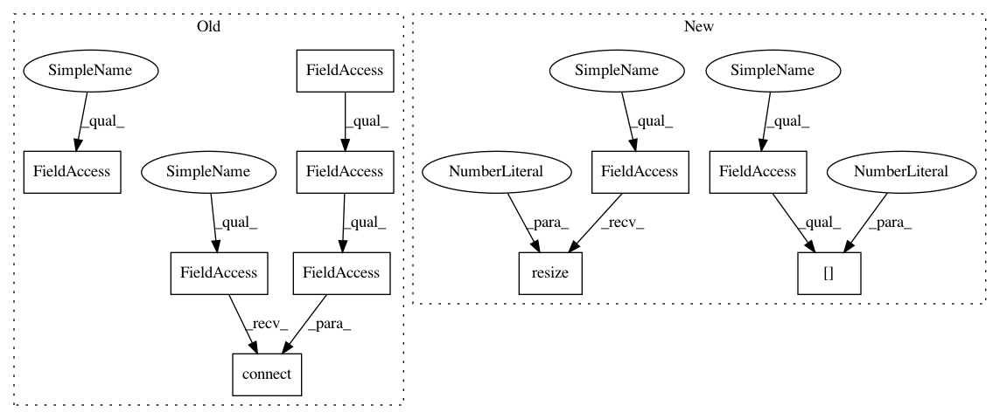

3729dd51f1c7431386b662f99bbf34eef80b7ec8,ilastik/workflows/tracking/chaingraph/chaingraphTrackingWorkflow.py,ChaingraphTrackingWorkflow,connectLane,#ChaingraphTrackingWorkflow#Any#,79
Before Change
opTracking.LabelImage.connect( opObjExtraction.LabelImage )
opTracking.ObjectFeatures.connect( opObjExtraction.RegionFeatures )
opDataExport.WorkingDirectory.connect( self.dataSelectionApplet.topLevelOperator.WorkingDirectory )
opDataExport.RawData.connect( op5Raw.Output )
opDataExport.Input.connect( opTracking.Output )
opDataExport.RawDatasetInfo.connect( opData.DatasetGroup[0] )
def _inputReady(self, nRoles):
After Change
opDataExport.RawData.connect( op5Raw.Output )
opDataExport.RawDatasetInfo.connect( opData.DatasetGroup[0] )
opDataExport.Inputs.resize(1)
opDataExport.Inputs[0].connect( opTracking.Output )
def _inputReady(self, nRoles):
slot = self.dataSelectionApplet.topLevelOperator.ImageGroup
In pattern: SUPERPATTERN
Frequency: 3
Non-data size: 10
Instances
Project Name: ilastik/ilastik
Commit Name: 3729dd51f1c7431386b662f99bbf34eef80b7ec8
Time: 2014-06-17
Author: martin.schiegg@iwr.uni-heidelberg.de
File Name: ilastik/workflows/tracking/chaingraph/chaingraphTrackingWorkflow.py
Class Name: ChaingraphTrackingWorkflow
Method Name: connectLane
Project Name: ilastik/ilastik
Commit Name: 3729dd51f1c7431386b662f99bbf34eef80b7ec8
Time: 2014-06-17
Author: martin.schiegg@iwr.uni-heidelberg.de
File Name: ilastik/workflows/tracking/manual/manualTrackingWorkflow.py
Class Name: ManualTrackingWorkflow
Method Name: connectLane
Project Name: ilastik/ilastik
Commit Name: 3f7373f4b9a584d30c14738adea6ca02c05874ab
Time: 2014-06-17
Author: martin.schiegg@iwr.uni-heidelberg.de
File Name: ilastik/workflows/tracking/conservation/conservationTrackingWorkflow.py
Class Name: ConservationTrackingWorkflow
Method Name: connectLane